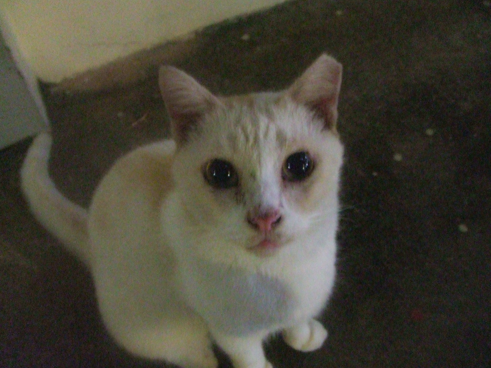
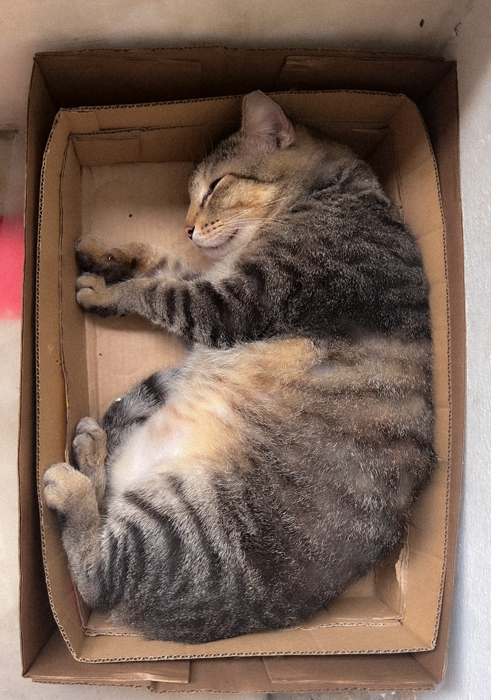
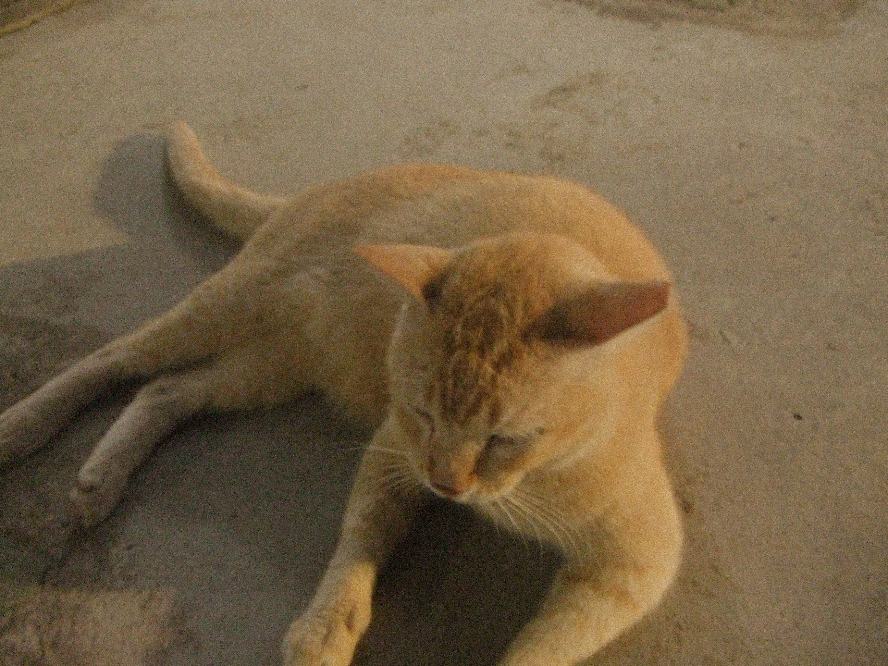

My Neighbourhood's Community Cats
The celebrities of my heart

About the Cats
Whiskers is the unofficial mayor of our neighbourhood, known for dramatic slow blinks, strategic loafing, and an uncanny ability to appear exactly when food is opened.
Originally spotted near the carpark, Whiskers quickly rose to fame after a viral photo of a perfectly executed stretch on a sunny windowsill. Since then, fans from three streets over have been leaving treats and head-scratches.
Hobbies include: eating and being grumpy.

Interesting Facts
Superpower
Can detect the sound of a treat bag from two houses away.
Favorite Time
5:47 PM, when the neighbour usually cooks dinner.
Signature Move
The “I’m starving” face, despite having just eaten.
Arch-Nemesis
The automatic vacuum cleaner (a.k.a. The Loud Monster).
Random Cat Fact
Photo Gallery

